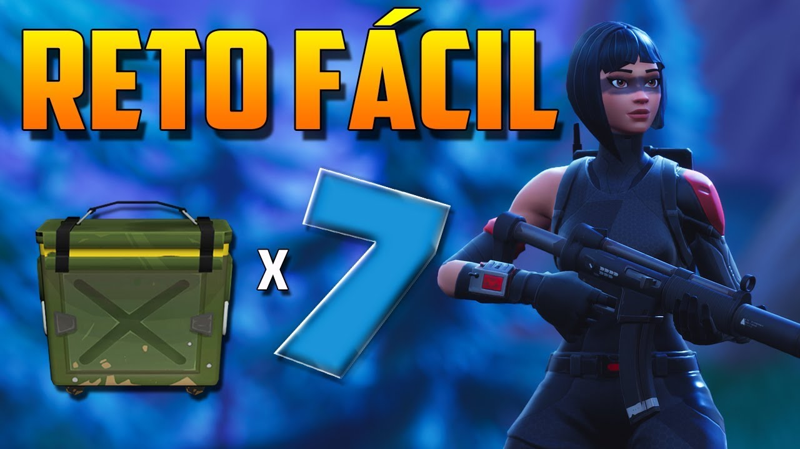
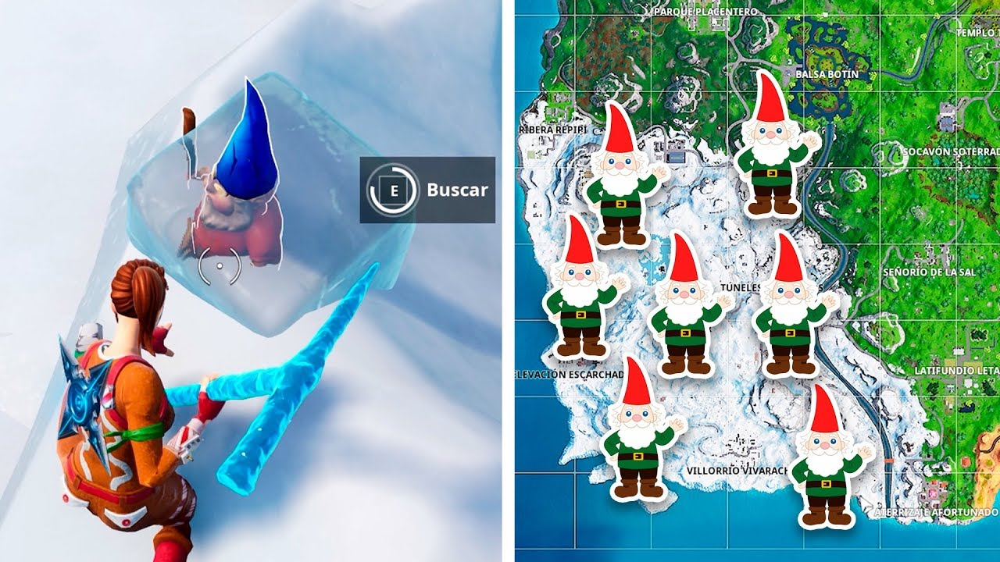

clic para ver más informacion de cómo completar todos los desafíos
clic para ver más informacion de
Llegamos a la semana 6 de la temporada 7 de Fortnite con unos desafíos donde se vuelve a explotar la nueva zona helada. No obstante el desafío estrella, el de los gnomos congelados, nos exige indagar en dicha zona para localizar a estas simpáticas criaturas que vuelven a cobrar protagonismo en otro desafío de Fortnite, tras su aparición en otras temporadas. Es por ello que te contamos cómo superar los desafíos de la semana 6 de la temporada 7 de Fortnite, con mapas detallados y descripciones exactas para superar cada uno de los retos para que, de esta manera, no tengas excesivas dificultades.
Registra una caja de munición en ubicaciones con nombres diferentes
Simplemente lo que debes hacer es abrir siete cajas de munición en ubicaciones con nombres, que son aquellas que están señalizadas en el mapa. No es necesario que lo hagas en una única partida, con lo que puedes ir abriendo cajas de munición de manera natural mientras haces el resto de los desafíos semanales. Así que directamente no dejes sin abrir ninguna caja de munición que te vayas encontrando en tus partidas, pero recuerda que deben ser en localizaciones con nombre en el mapa.
Busca gnomos congelados
Vuelven otra vez los gnomos a un desafío de Fortnite, pero esta vez son congelados y están en la zona helada al suroeste del mapa. Lo que debes hacer es encontrar siete de estos gnomos, y sabrás que estás cerca de ellos porque escucharás un característico sonido. Aun así te damos la señalización de todos estos gnomos en el mapa que es la siguiente:
Elimina enemigos en Aterrizaje Afortunado o Pisos Picados
Debes derrotar a tres enemigos diferentes en cualquiera de estas dos localizaciones. Si quieres resolver rápido el desafío te puedes dirigir al comienzo de la partida a Pisos picados dodne hay muchos usaurios.